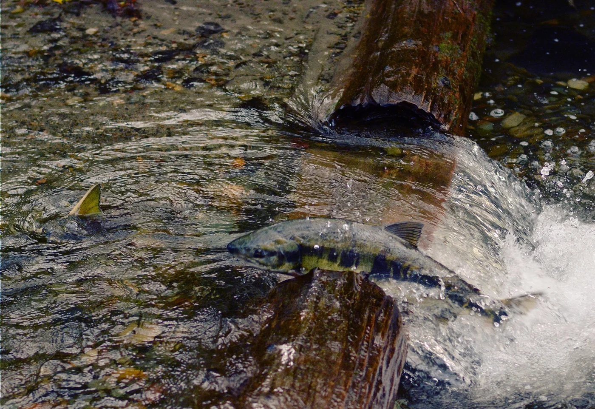

OVERVIEW
A river full of returning lives
Explore this point
Sources & image provenance
Sources checked September 8, 2026. Follow operator links for changing access and events.
Real photographs are shown first, with photographer and license links beneath each image. Some show the wider town or watershed; captions identify the exact relationship to the stop. Use AI illustration to see the original locally generated FLUX.2 Klein artwork. Neither view is a current salmon sighting report. Full photograph credits.
Course written by Astra. Recorded locally with Kokoro Michael, a synthetic male voice.
Read the complete course script · Media provenance